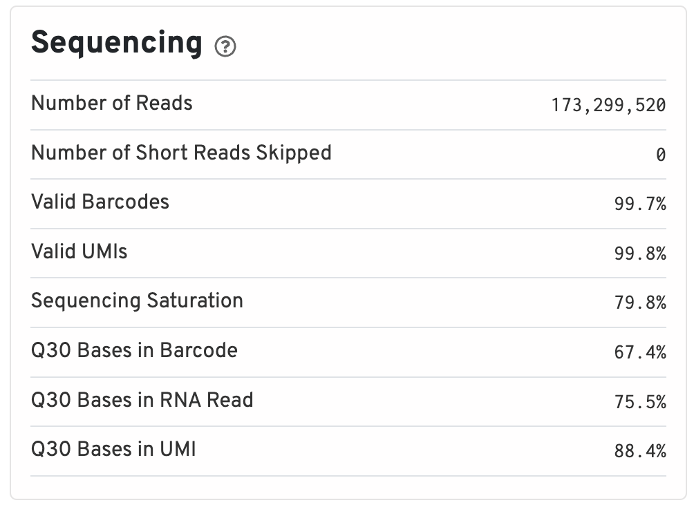
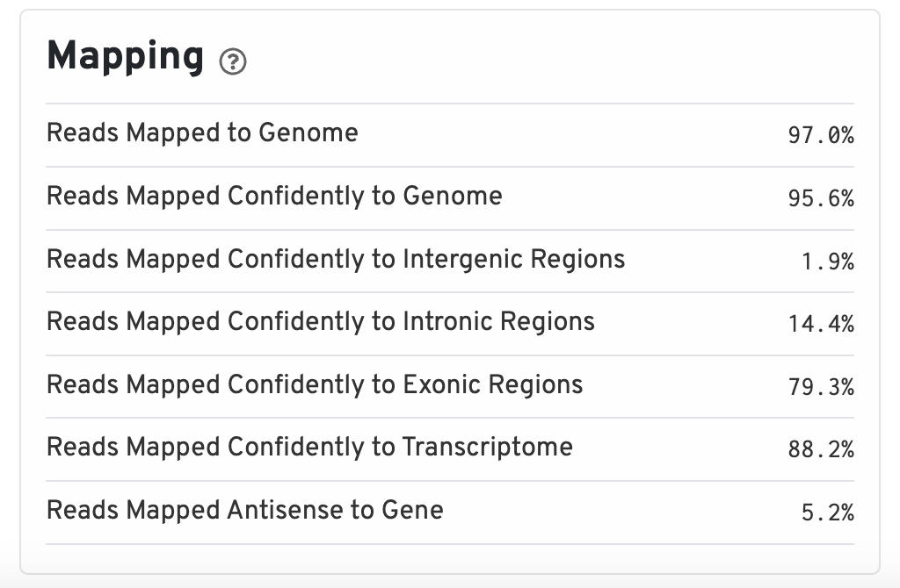
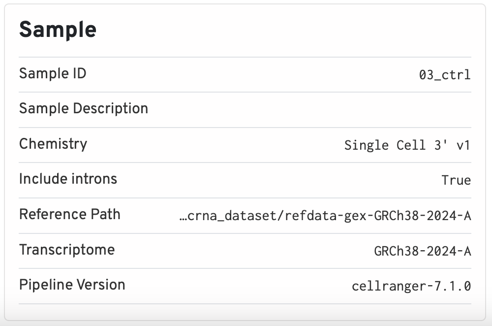
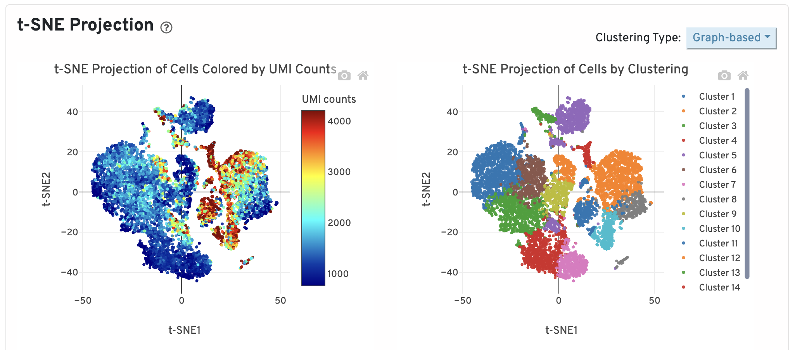
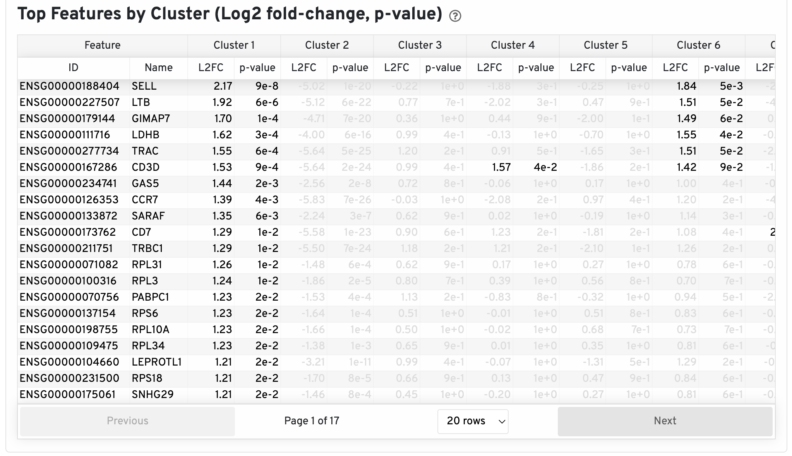
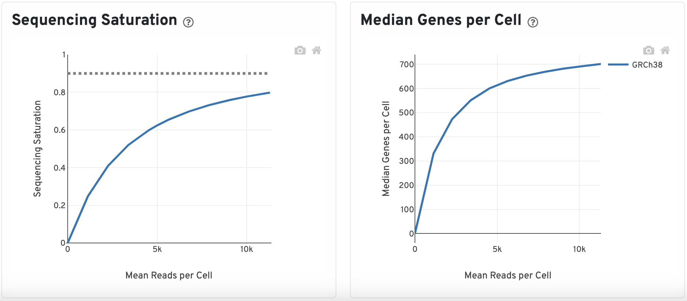

The Web Summary HTML file is a great resource for looking at the basic quality of your sample before starting on an analysis. 10x has a page describing each metric in depth. There are two pages/tabs included in a scRNA report titled “Summary” and “Gene Expression”.
We have included these Web Summary files for the control and stimulated samples as links below. You can download each, and move the HTML to your project data folder:
Summary
At the top of the “Summary” tab, under the “Alerts” header, will be a list of warnings and messages on the quality/important information about the sample. These messages are very informative on what may have gone wrong with the sample or other flags that can be set in the cellranger count run to gain better results.
Underneath the “Alerts” header, in green text, are the estimated number of high quality cells in the sample, average reads per cells, and median genes per cell. The number of cells will vary depending on how many were loaded in sample preparation, but some general recommendations are provided below:
- 500 cells is the lower limit for a good quality sample.
- 10x also recommends a minimum of 20,000 reads per cell on average.
- The median genes per cell varies widely across samples as it depends on sequencing depth and cell type, making it difficult to establish a good minimal value.
The remaining 4 sections include various metrics that describe the overall quality of the sample. Note that clicking on the grey question mark will show more detailed explanations.
Sequencing
Includes information such as the total number of reads and how many of those reads did not meet the length requirements. Additionally, since all barcodes and UMIs are known values (from the kit used to prep scRNA experiments), we can evaluate what percentage of the barcodes and UMIs belong to that whitelist and are valid.

Ideally, you would like to see >75% for almost all of these values since lower values are indicative of a low quality sequencing run or bad sample quality.
Mapping
Percentage of reads that map to different regions of the reference genome as reported by STAR.

The percent of reads mapped to the genome should be on the higher end, around 85% or higher. Values that are very low could indicate that the reference genome supplied was incorrect or that the sample was problematic. Otherwise, the expectation for a scRNA runs is that the majority of reads will belong to exonic regions. If nuclei were used instead of whole cells, the percentage of reads mapping to intronic regions will be higher (~45%).
Cells
Here we can see what an ideal representation of the Barcode Rank Plot looks like. The cells are sorted by the number of UMIs found in the cell to differentiate empty droplets/low quality cells (background) from actual cells.

Image credit: 10x
The shape of these plots can indicate a few different things about the sample:
- Typical: Clear cliff and knee with separation between cells and background.
- Heterogeneous: Bimodal plot with 2 cliffs and knees, with a clear divide between cells and background.
- Compromised: Round curve with a steep drop-off at the end whih indicated low quality due to many factors.
- Compromised: Defined cliff and knee, but with few barcodes detected could be due to inaccurate cell count or clogging.
This section additionally describes averages and medians for number of genes and reads in the sample.
Sample
The sample section contains important metadata used by cellranger, such as what the Sample ID and the path used for the reference. The chemistry version (which 10x kit was used) and intron flags are also stored here. This information is useful for reproducibility reasons, as the version of cellranger used is also kept.

Gene Expression
The “Gene Expression” table contains information downstream of the basic QC, such as:
t-SNE Projection
Dotplot showing the t-SNE projection of filtered cells colored by UMI counts and clusters. The report allows you select various values of K for the K-means clustering, showing different groupings that can be generated from the data.

Later in the workshop we will spend more time on the intricacies of clustering. The requirements for this QC report would be to see clear separation of cells into groups with defined clusters - representing different cell types.
Top Features by Cluster
This table shows the log2 fold-change and p-value for each gene and cluster after a differential expression analysis is run.

These top genes per cluster can give a brief peek into the cell type distribution of the sample. If no expected cell type marker genes appear or mitochondrial/ribosomal genes show up frequently, this can be indicative of something wrong with the sample.
Sequencing Saturation and Median Genes per Cell
The sequencing saturation plot is a measure of library complexity. In scRNA, more genes can be detected with higher sequencing depth. At a point, you reach sequencing saturation where you do not gain any more meaningful insights which is what the dotted line represents here.
Similar to the sequencing saturation plot, looking at the median gene per cells against mean reads per cell will indicate if your have over or under-sequenced. The slope near the endpoint can be used to determine how much benefit would be gained from sequencing more deeply.
